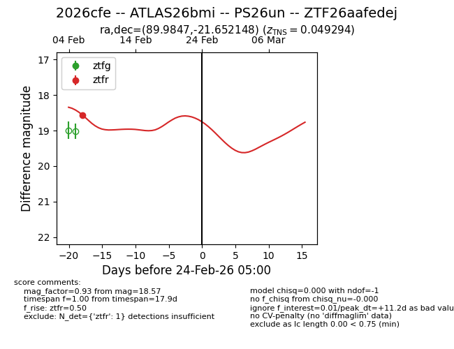
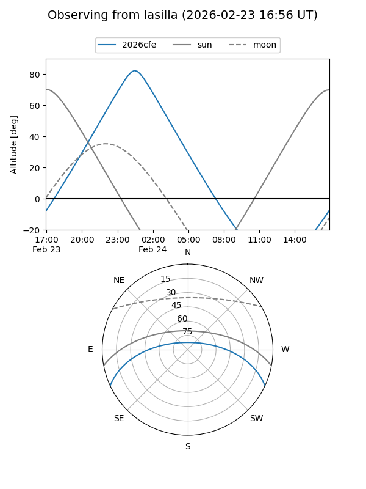
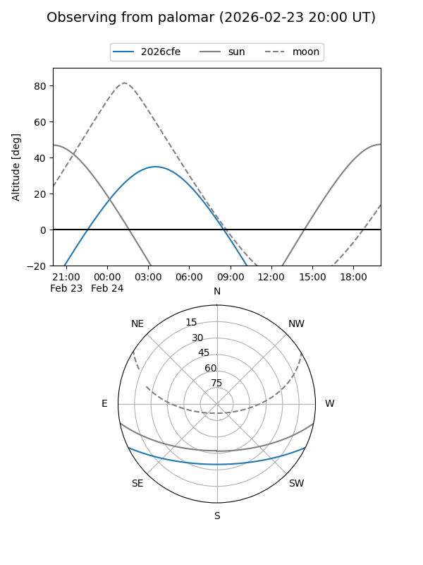

2026cfe
Target 2026cfe at 2026-02-24 09:08
Aliases and brokers:
FINK: link
Lasair: link
ALeRCE: link
TNS: link
YSE: link
alt names
ZTF26aafedej (ztf,fink_ztf)
2026cfe (tns,yse)
ATLAS26bmi (atlas)
PS26un (panstarrs)
Coordinates:
equatorial (ra, dec) = 89.9847,-21.65215
equatorial (HMS+DMS) = 05:59:56.33,-21:39:07.73
galactic (l, b) = (227.4093,-20.64397)
Flags:
Photometry:
last ztfr=18.57
1 ztfr detections
Lightcurve

Visibility


Additional plots